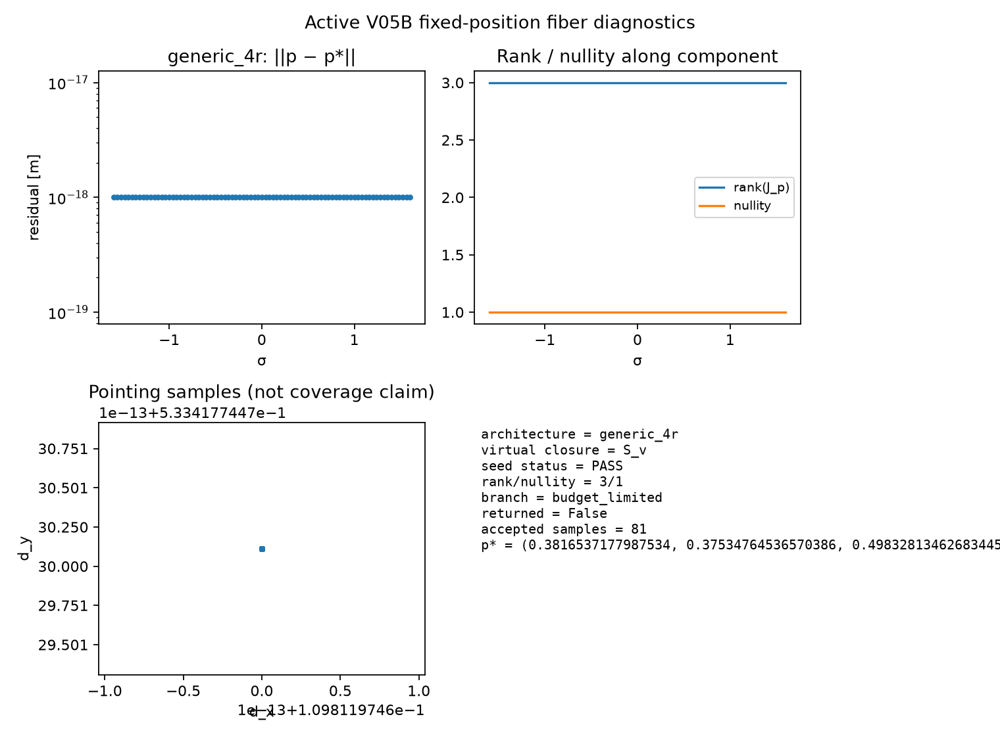
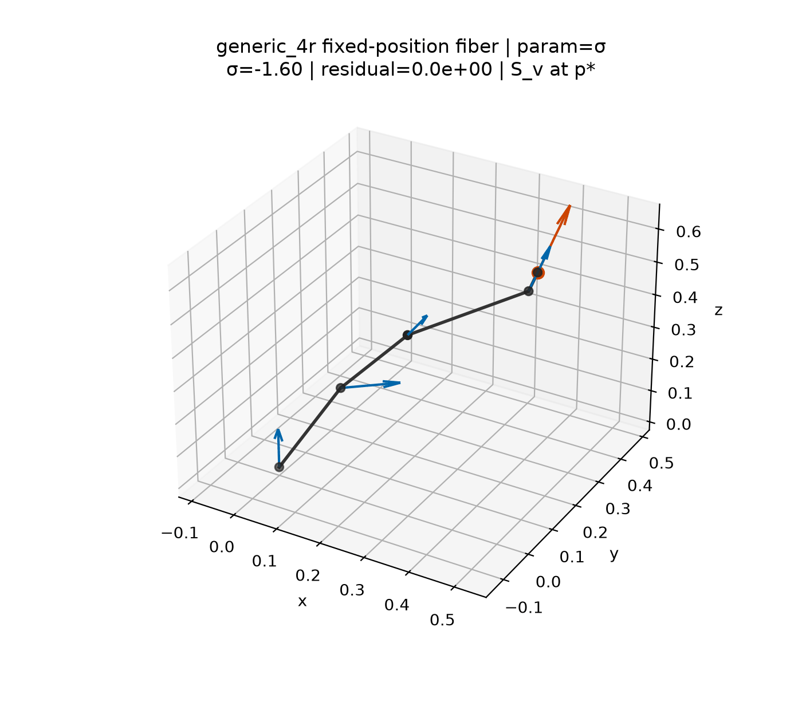
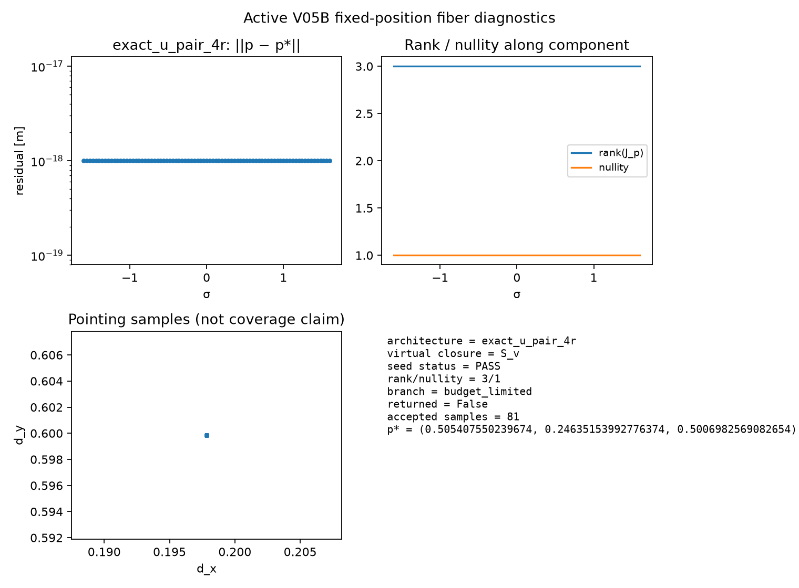
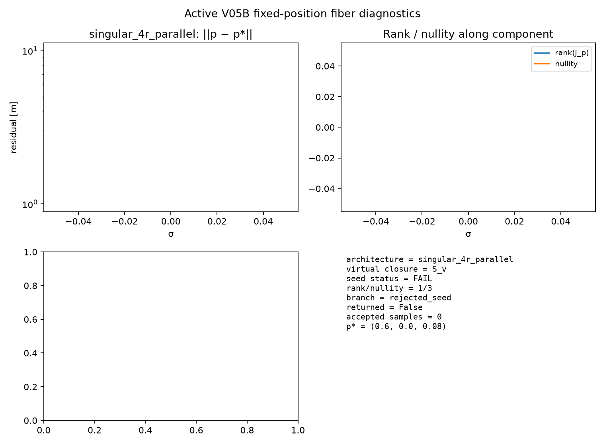
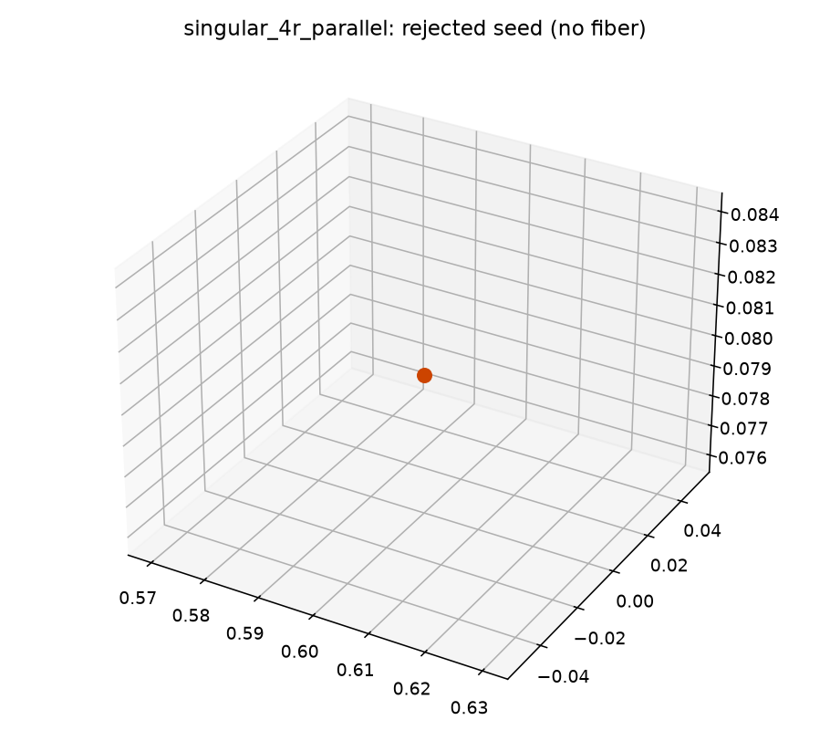

Active V05B — Spatial 4R Fixed-Position Source Fiber
Source problem 4R + S_v, M = 1 at regular seeds.
This is the kinematic-decomposition ladder V05B, not the deferred explorer family-winding atlas (V10).
Gate note.
At least one regular fixed-position component is continued with explicit rank/nullity and branch status.
Orientation samples along the fiber are stored for later V05C and are not coverage claims.
V05D axis-aggregation certificates, V05E near-aligned rejection, and historical V10 atlas work remain deferred.
Explorer spatial4bar_explorer/v05a pointing-slice MVP remains mechanism_explorer_only.
Corpus fibers
| Architecture | Seed | rank/nullity | Closure | Branch | Returned | Samples |
|---|
generic_4r | PASS | 3/1 | S_v | budget_limited | False | 81 |
exact_u_pair_4r | PASS | 3/1 | S_v | budget_limited | False | 81 |
singular_4r_parallel | FAIL | 1/3 | S_v | rejected_seed | False | 0 |
Figures
generic_4r diagnostics

generic_4r fiber animation

exact_u_pair_4r diagnostics

exact_u_pair_4r fiber animation

singular_4r_parallel diagnostics

singular_4r_parallel seed view

Deferred
- V05C orientation-curve truth gallery
- V05D exact
RR→U aggregation + DecompositionCertificate
- V05E near-aligned rejection tests
- Historical all-family winding atlas (V10)